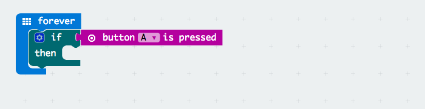

For this project, you will need:
- 1 × Microbit
- 1 × Zip Halo
- 1 × 4.5V battery box with jst connector
- 1 × wooden horse head (optional)

For this project, you will need:
Open this link to find today’s code:
https://makecode.microbit.org/#pub:30366-70373-86304-87739
If you’ve ever used Scratch, this editor should look familiar.
Later, you’re going to drag blocks of code from the categories in the middle, to the program area on the right.
We’ve already written a very short program to start you off.
Press the “Download” button to download your code.
Plug a microbit into your computer, using a USB cable.
Find the “microbit.hex” file in your Downloads folder, and drag it onto the MICROBIT drive.
On the Library laptops, you can get to Downloads by pressing the “Files” icon in the launcher on the left.

A yellow light on the back of your microbit will flash while the file is being copied.
Wait until the light has stopped flashing.
Once the light has stopped flashing, unplug the microbit, and connect a battery pack to the Zip Halo ring.
What happens when you plug the power in?
At the moment, your code is pretty boring – it just shows a single colour when the microbit has power.
Let’s change the code to do something more interesting!
Remove the [strip] show color [red] block from your code.
Find the [item] set pixel color at [0] to [red] block, inside the “Neopixel … More” category, and drag three copies of it into the end of your on start block.
Change the three blocks so they look like this:
Numbers on computers start at 0 (programmers call these “indexes”). So the first LED is index 0, the second is index 1, and so on, until the final LED which is index 23.
The set pixel color blocks tell the microbit which pixels to light, but doesn’t actually tell it to turn them on. So we need to add a [strip] show block, like this:
Now we want to add the animation. Find the [item] rotate pixels by [1] block, add it to the forever block in your program, and change the [item] to [strip]
Then add a [strip] show block and a pause [100] block after it.
Download your code, copy it onto the microbit, and try it out, once the light on the back of the microbit stops flashing.
The three LEDs will spin around the Zip Halo – they look like a little red snake!
How could we change our snake so that it looks like a little multicoloured snake?
yellow, orange, and red (in that order) are a very nice combination.
Let’s tweak our code so that the snake only moves when we frighten it – by shaking the microbit!
Add an on shake block to your program, and put a repeat [4] block inside it.
We want our snake to complete a full circle when we shake the microbit. There are 24 LEDs on the Zip Halo, so change the 4 to a 24
Now, move all of the code out of the forever block, and instead, put it into the repeat [24] times block.
Download your code, and try it out. What happens when you shake the microbit?
Try attaching your microbit onto a wooden horse head. What happens when you shake it?
You can stop here if you want, and go enjoy more of what Light Night has to offer!
But if you’re near the library at 8pm, come find us, and we’ll give you a microbit-powered horse head to wave outside during the Batala Mersey drum performance.
Got more time to play with? How about a fun extension!
Your microbit can react to all sorts of inputs. As well as detecting movement and shaking, it has a built-in compass.
Let’s make it so that, when you press down both the A and B buttons, your microbit turns into a compass, that changes colour based on which direction you’re facing.
Find the if … then … block inside the “Logic” category, and drag it into your forever block.
Find the button [A] is pressed block, and plug it into the end of the if … block.

We want to switch our microbit into compass mode by pressing both A and B at the same time. So, click the [A] and change it to [A+B].
Drag an [item] show color [red] block into your then … block, and change the [item] to [strip].
Find the plug the compass heading (°) block in the “Input” category, and drag it into your program.
The compass heading will be a number from 0 to 360, because there are 360 degrees in a circle. We need to translate that into a colour.
Handily, there’s a block that accepts a “Hue”, which is a number from 0 to 360, and will change the LEDs to any colour in the spectrum, based on where the number comes in that 0–360 range.
Find the hue [0] saturation [0] luminosity [0] block in the “Neopixel” category, and plug it into the end of your [strip] show colour block.
Plug in the compass heading (°) block after hue, then set the saturation to 100 and the luminosity to 50.
When you’re finished, it should look like this:
Download your code, and try it out.
What happens when you hold down A+B at the same time, while turning around?
If so, congratulations! You are using a brand new microbit, and it needs your help working out which direction is North.
Spin the microbit around, so that the little pixel in the centre completes a full circle round the edge of the microbit’s display.
Once you’ve completed a circle, your microbit will show a smiley face, and then continue with your program. Try pressing A+B and turning around!